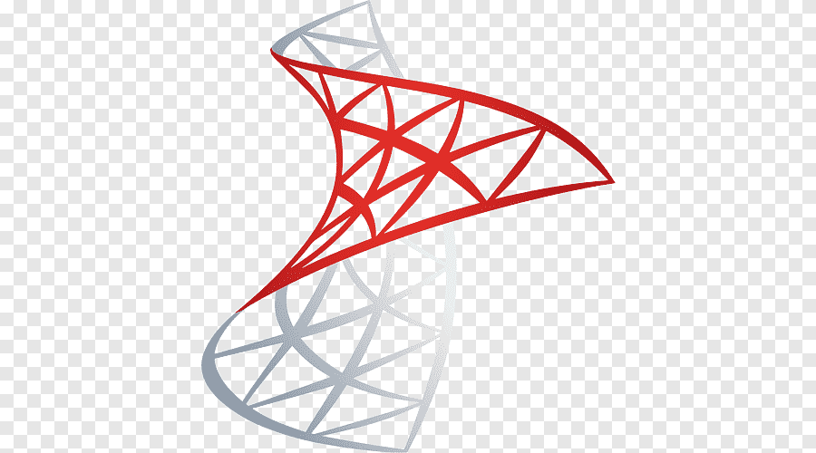

Proyectos
Aquí están algunos de los proyectos en los que he trabajado. ¡Échales un vistazo!
K-means Clustering - Repaso
Este proyecto explora el algoritmo de K-means Clustering utilizando datos simulados. Se aborda la generación de datos, visualización, aplicación del algoritmo, y evaluación de clusters.
Ver en GitHubAnálisis de Ventas - Proyecto Power BI
Proyecto desarrollado en Power BI que analiza datos de ventas mediante diversas visualizaciones, importación y transformación de datos.
Ver en GitHub

Manejo de Queries para la Extracción y Análisis de Datos con SQL Server - PUC Chile
Este proyecto involucra la creación y consulta de una base de datos para un sistema de gestión escolar en SQL Server, centrándose en la extracción y análisis de datos.
Ver en GitHub